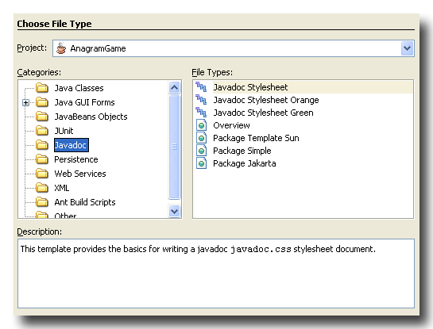

The javadoc-templates module offers following templates.
overview.html templates - documentation of the entire application, the set of packages
package.html templates - documentation of a single package
javadoc.css templates - style sheet of the generated javadoc html pages
The templates are installed in Templates|Javadoc.
Create your javadoc template by doing following steps:
The screen shot below shows the Javadoc template dialog:
Usually following names are appropriate:
package for a package html file
overview for a overview html file
javadoc for a javadoc style sheet file
The javadoc tool accepts files named package.html automatically
as package documentation. Thus no extra configuration is necessary for including
the package documentation in the javadoc generated html pages.
For the other javadoc file types the following sections describe, how-to configure the javadoc tool.
If you create an overview documentation you have tell javadoc to use
your overview document.
In Ant's build.xml augment the
javadoc task by specifying the overview file, like:
<javadoc...
overview="${path-to-overview}/overview.html"...
>
Alternatively specify in your project
Properties|Documenting the overview document in the
field Additional javadoc options, like:
-overview=${basedir}/${src.dir}/overview.html
If you create a javadoc style sheet you have to tell javadoc to use
your style sheet file.
In Ant's build.xml augment the
javadoc task by specifying the style sheet file, like:
<javadoc...
stylesheetfile="${path-to-javadoc-style sheet}/javadoc.css"
...
>
Alternatively specify in your project
Properties|Documenting the style sheet file in the
field Additional javadoc options, like:
-stylesheetfile=${basedir}/${src.dir}/stylesheet.css
**/*.java,**/*.form,**/package.html,overview.html,javadoc.css
Read more about writing javadoc documentation: